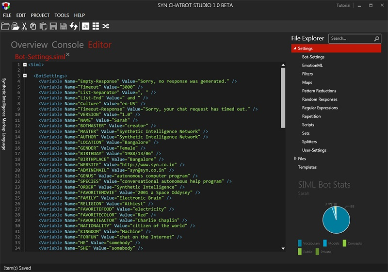
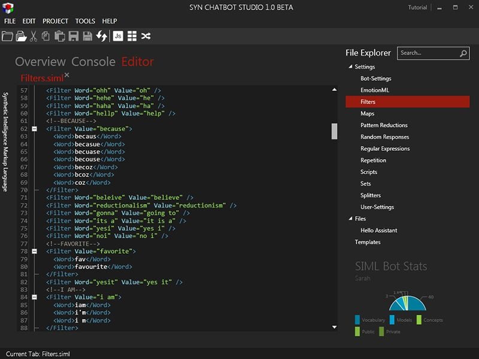
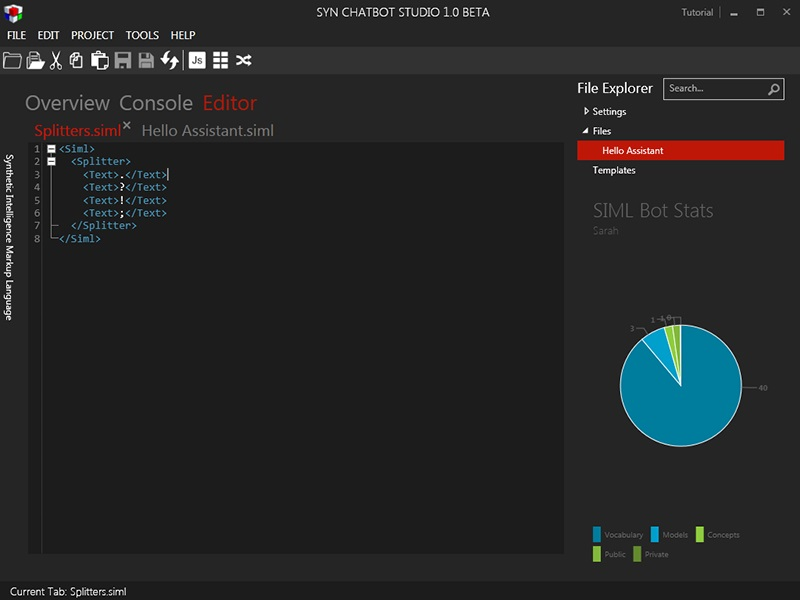
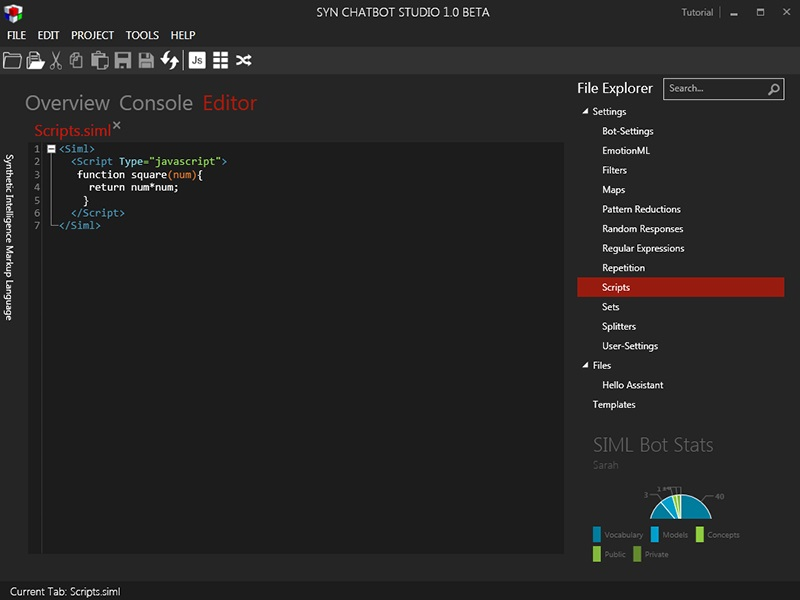
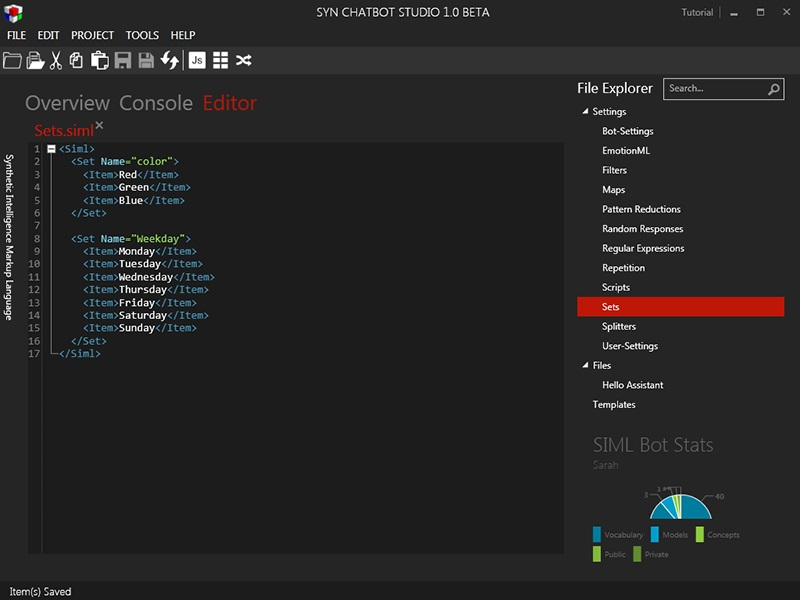

File Explorer
A Project is a collection of important SIML files. Their order is important for SIML Bot as the SIML Bot requires that the Settings files are loaded before SIML files with Concepts in them.
Settings Folder
On the right hand-side under the File Explorer you will see the Settings Folder ( we call it Folder because of the project structure ). Click on the Settings folder to expand the list. Under it you will find the following files
- Bot-Settings
- EmotionML
- Filters
- Maps
- Repetition
- Pattern Reductions
- Random Responses
- Regular Expressions
- Scripts
- Sets
- Splitters
- User-Settings
All of the above files play an important structural role for SIML Bot creation. If you do not need any of the settings file DO NOT DELETE THE FILE instead replace the entire content of the file with
Bot-Settings
This file holds all static information that will be used to configure the Bot. For simplicity we have removed the XML Comments in the files but whenever you create a new project you will see detailed XML comments giving you information about the File and important XML elements used within the file. In this case the Bot-Settings file shows us some key variables and their values stored with BotSettings element. The variables declared in this file should NOT be changed during runtime as they are meant to be static in nature which means that their values are considered only once.

To check how Bot variables are used click on ”’Hello Assistant”’ file and add in the following code.
SIML
<Model>
<Pattern>WHAT IS YOUR NAME</Pattern>
<Response>My name is <Bot Get="name"/></Response>
</Model>
Now press Ctrl+R to refresh the project. Everytime you make changes to any SIML file you should Refresh the project for the changes to take effect. Now click on the Console tab and type what is your Name ? the bot will respond My name is Sarah. The name Sarah was retrieved using the Bot variable defined in the Bot-Settings file
EmotionML
One of the many important features of SIML Bot is the internal EmotionML parser which can parse EmotionML elements and set values for developers to use. Unlike many of the existing Chatbot architectures that think emotions can be defined as a single state of mind EmotionML brings in the true essence of details required to simulate emotions. The EmotionML file consists of some predefined emotions with their values and dimensions.
To set emotion for the Bot or the user you can use the BotEmotion and UserEmotion tags.
Filter
This file consists of Filters that are used to filter out or replace parts or words from user inputs and bot outputs. You will see Filter elements consisting of Text, Word and Regex tags each of which have a different normalization behaviour.
To add your own filter, say you wish to replace the word coz with because the code may look like the following.
<Filter Value="because">
<Word>coz</Word>
<Word>bcoz</Word>
</Filter>
A typical Filter file may look like the following with lots of filters in it. Since filtration requires that individual words and characters are studied there can be a performance penalty if lots of filters are used. The best way to create a specific filter is by studying how your users actually interact with your Bot and then creating necessary filters.

Splitters
Splitting a user message into multiple inputs isn’t an easy task. The developer has to consider a lot of things before simply deciding to split the sentence using (Period) or (Comma) but whatever the idea of splitting be you should always keep them inside this file and, if possible, create an XML comment stating why you have decided to split the sentence using certain characters, words or regular expressions

Maps
The Maps file stores all sorts of mapping that will be required to transform a fragment of text from one set into an element of another. You will probably not need to change anything within file as Synthetic Intelligence Network will create them for you and upload them immediately as templates on our GitHub repository.
Pattern Reductions
Under this SIML file you can store recurring patterns and given them a special name using the hashtag convention. For example you can define multiple patterns for the sentence what is your name? and give it a unique name #BotName. This simplifies pattern usage and avoids redundancy to a great extent.
Random Responses
Sometimes the developer spends hours in total writing the same response for different patterns. The Random Responses file is meant to store repetitive random responses and giving them a special id so whenever you are to repeat yourself with a random response you could just use the one previously saved within this file.
Regular Expressions
You will definitely come across a situation where SETS will no longer be enough to capture a particular word or sentence. SIML handles regular expressions flawlessly and as Regular Expressions are available globally the file Regular Expressions is used to contain them under the same shelter.
Scripts
SIML Bot 1.0 supports JavaScript as its main scripting language ( discussions are already being made regarding more scripting engine integration ). The Scripts file contains Global scripts i.e. scripts that are available throughout the bot session. As more scripting engines are to be integrated its important that you define your scripts indicating what language the script is written in.

Example
<Script Type="javascript">
function square(num){
return num*num;
}
</Script>
Sets
A Set is a powerful entity it consists of words and phrases that are addressed using a unique name much like a color can have values like Red, Green, Blue and so on. Sets in SIML are fast and greedy. By greedy what is meant is that Sets will try to match maximum number of words/tokens possible. Example: if your set has 2 values say United States and United States of America the set will match the latter.
Take a look at the image below to get an idea as to how to declare Sets.

User-Settings
The User-Settings file stores values for variable names that will be used to initialize variables for every new user that interacts with the Bot. Once the default variables and their values are loaded for a user any changes made to the variable will affect that particular user as every user is given their own instance of variables.